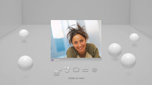
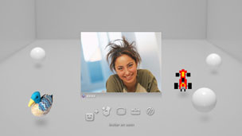

Venner > Stemme-/videchat > Starte eller avslutte stemme/videochat
Starte eller avslutte stemme/videochat
For å bruke denne funksjonen, må du oppdatere systemprogramvaren.
Du kan gjøre stemme/videochat med mennesker på listen over Venner. For å gjøre en stemmechat, trenger du en lydenhet/utgangsenhet (som en hodetelefon, selges separat). For å chate med video, trenger du et USB-kamera (selges separat).
Start stemme/videochat
1. |
Velg |
|---|---|
2. |
Velg  |
3. |
Velg (Inviter en venn) fra menyen som vises på skjermen. |
4. |
Skriv inn en melding, og velg deretter [Send].  Hvis personen blir med på chatten, vises hans eller hennes bilde og stemme-/videochatten starter. |
 (Venner) >
(Venner) >  (Begynn en ny chat).
(Begynn en ny chat). (Stemme-/video chat).
(Stemme-/video chat).Tips
- PS3™ systemet støtter stemme/videochat. Ytterligere chattevalgmuligheter, som chat i spill, kan være tilgjengelig gjennom spillprogrammet. For detaljer, henvis til instruksjonen som var medsendt programvaren som brukes.
- Du må være logget på PSNSM for å kunne chate.
- Selv om du kan invitere flere venner til chatten, vises kun avatarene for de første fem vennene som du velger på skjermen.
- Opptil seks personer kan bli med i et chatterom.
- Tale-/videochattefunksjonen kan ikke brukes dersom restriksjoner om bruk av denne er innstilt. For informasjon om innstillinger for foreldrekontroll, se [Om XMB™-menyen] > [Bruke fordrekontroll-innstillingene] i denne veiledningen.
- Du kan bruke kompatible USB-hodetelefoner / Bluetooth®-hodetelefoner / EyeToy™ USB-kamera / PlayStation®Eye / USB-kamera som er kompatibelt med USB-videoklasse (UVC) på PS3™-systemet.
- Når du kobler til et USB-kamera med en USB-hub, skal du bruke en hub som støtter USB 2.0. Hvis en hub ikke støtter USB 2.0 som brukes, kan det oppstå kvalitetstap på bilde eller at bildet ikke kan vises.
- For informasjon om støttede periferiutstyr og brukerinstruksjoner, kontakt forhandleren der utstyret ble solgt.
Forlate chatrom (avslutte stemme/videochat)
Under en chat, velg  (Forlate) fra kontrollpanelet.
(Forlate) fra kontrollpanelet.
Tips
Hvis personen som startet stemme- / videochatten forlater rommet, lukkes chatterommet.